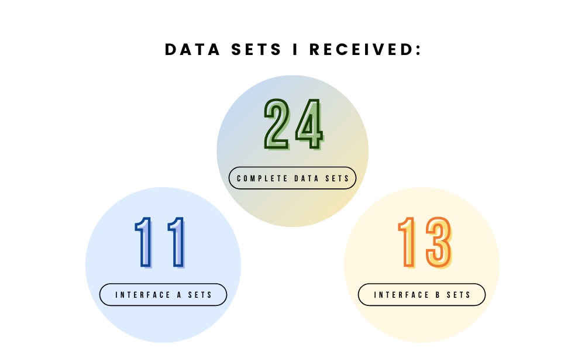

INTERFACE A

In this project, I created two versions of the same website to see which one has a better user interface. The main difference between Interface A and B is the layout: A has a grid layout, whereas B has a vertical layout that needs scrolling.
The time to completion (i.e. the time it takes to order at least $150 of cacti) for Interface A is no different from the time to completion of Interface B.
Thus, there is no relationship between these variables, so there should be no statistical difference between the two interfaces' time to completion.
The time to completion for Interface A should be less than the time to completion for Interface B.
This is because the cacti in Interface A are presented in a 2x2 grid so the user can see all of the cacti without scrolling, and the checkout button is also below these cacti such that the design is intuitive and flows well. In contrast, the cacti in Interface B are presented in a list so the user has to scroll downwards, and the checkout button is also at the top of the page, meaning the user has to scroll back up to the top to complete the task.
The return rate (i.e. the number of times a user returned to the browsing page from the checkout page) for Interface A is no different from the return rate of Interface B.
Thus, there is no relationship between these variables, so there should be no statistical difference between the two interfaces' return rate.
The return rate for Interface A should be lower than the return rate for Interface B.
Intuitively, I think returning to the browsing page signifies inefficiency, as the objective is for the user to purchase cacti, not return back to the browsing page to take additional steps or double check their order. Even though the prices in Interface B are bolded to add clarity, I think the overall layout (grid in A versus list in B) should make A the more efficient page, meaning users can checkout more accurately, resulting in a lower return rate.
My data collection process primarily involved having students in different studios test out my two interfaces. However, since I had fewer than 40 data sets (my link was low on the Excel sheet), I asked some of my friends to test out my interfaces as well. Ideally, having more data sets would have resulted in more accurate results, but hopefully 24 data sets can show statistical significance!
Since the p-value of 0.041 is less than the significance value of 0.05, I can reject the null hypothesis. This means there is a statistical significance between the difference of the time to completion of A & B, so I can adopt my alternative hypothesis. By comparing the average times of A & B, I conclude that the time to completion of A is less than that of B.
Since the p-value of 0.916 is greater than the significance value of 0.05, I failed to reject the null hypothesis. This means that there is no statistical significance between the difference of the return rate of A & B.
I used Canva to create the infographic.